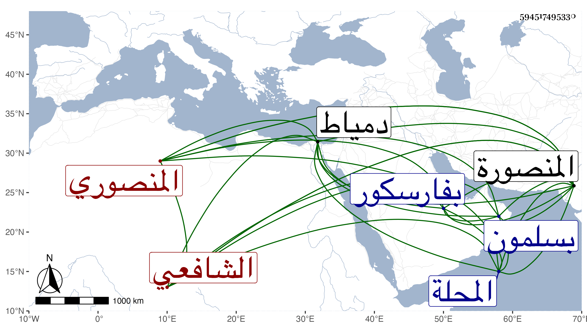

0902Sakhawi.DawLamic.ITO20230111-ara1.EIS1600.594517495330
Biography ID: 594517495330
81
محمد بن محمد بن أحمد بن عمر بن كميل كحميد ابن عوض بن رشيد ككبير البدر بن الشمس بن الشهاب بن السراج بن الكمال المنصوري الشافعي الماضي أبوه ويعرف كسلفه بابن كميل ثم بابن أحمد . ولد بعد سنة عشرين وثمانمائة بالمنصورة ونشأ فحفظ القرآن والحاوي وكتبا واشتغل قليلا وحضر عند القاياتي فيما ذكر وسمع على شيخنا وحضر دروسه ، وناب في القضاء عن قريبه أبي البقاء ثم بعد موت والده عن شيخنا واستقل بقضاء بلده بل ومنية ابن سلسيل ودمياط في وقتين مختلفين بل اجتمعا له وقتا في آن واحد . وتزوج أخت أوحد الدين بن العجيمي قاضي المحلة واستولدها أولادا نور الدين على وجلال الدين محمد وأبو السعادات محمد الآتي ، وكان بديع الذكاء فاضلا بحيث زعم أنه كتب على جامع المختصرات وغيره وعمل كتابا نمط عنوان الشرف بزيادة علمين جيد الكتابة ذا قدرة على التنويع الخطوط بحيث يفضي إلى التزوير مع خبرة تامة بالأحكام وصناعة التوثيق ونظم حسن امتدح به الأكابر كالجمالي ناظر الخاص وابن الكويز وغيرهما وكتب عنه منه ابن فهد والبقاعي وغيرهما في سنة ثمان وثلاثين وكذا كتبت عنه وربما قيل أن كثيرا منه لأبيه ولكن لم أكن أقصر به عن ذلك مع علمي بكذبه ورقة دينه وتزويره ، وقد أهانه الأشرف قايتباي حين اجتيازه بفارسكور لمزيد شكوى الناس منه . ولم يلبث أن مات فجأة بسلمون في يوم الجمعة سلخ جمادي الأولى سنة ثمان وسبعين وحمل في يومه إلى المنصورة فدفن بها . ومن نظمه :
| أريد منك الآن يا سيدي | ثوبا مليحا ناصعا في البياض |
| فعبدك الآن غدا عاريا | من كل شيء فاقض ما أنت قاض |
وقوله :
| يا شمس دين الله أنت مصدق | فيما تقول وإن غيرك يكذب |
| أو ما علمت بأن قطية أهلها | سفهاء ما فيهم رئيس يصحب |
